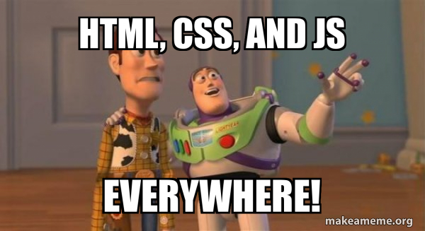

Chapitre 1: Pages web statiques⚓︎


Le cas le plus simple : la même page web pour tout le monde⚓︎

Nous allons tout d'abord considérer le cas où le serveur renvoie une page unique, identique pour tous les utilisateurs. De plus, l'utilisateur ne pourra pas agir sur sa page : il n'y a aucune interactivité. On parle de page statique.
Exemple de page statique côté serveur et côté utilisateur :
- cette merveille de page web.
- plus complète, mais tout aussi statique : cette page Wikipedia consacrée à Leslie Lamport.
1 Pages web en html pur⚓︎
Lorsque le client demande au serveur le contenu d'une page web, celui-ci lui renvoie, dans le cas le plus simple, une simple page html.
html est un langage dit « à balises ». Ce n'est pas à proprement parler un langage de programmation, mais plutôt un langage de description de contenu.
Il a été inventé en 1992 par Tim Berners-Lee. La version actuellement utilisée est le html5.
Exemple de page web minimale
<!DOCTYPE html>
<html lang='fr'>
<head>
<meta charset="utf-8">
<title>Un titre très original</title>
</head>
<body>
<p>Ceci est le texte introductif de ma page.</p>
<h1> Ceci est un titre de niveau 1 </h1>
Mais sans rien d'intéressant.
<h2> Ceci est un titre de niveau 2 </h2>
<ul>
<li> le début d'une liste indentée </li>
<li> la suite ... </li>
</ul>
<p>
Pour apprendre le fonctionnement des balises, voir <a href="https://developer.mozilla.org/fr/docs/Learn_web_development/Core/Structuring_content/Basic_HTML_syntax">ce tutoriel</a> par exemple !
</p>
</body>
</html>
Allez contempler ici le rendu de cette magnifique page et suivez le lien qui s'y trouve pour apprendre le fonctionnement des balises html.
Indications
- Vous pouvez utiliser l'éditeur de votre choix. Par exemple le logiciel Sublime Text installé au lycée (pour le lancer cliquez sur l'icône Windows puis commencez à taper Sublime au clavier) que vous pouvez aussi installer sur votre ordinateur personnel. Ou bien Notepad++.
- Vous pouvez aussi utiliser un éditeur en ligne avec rendu instantané, du type https://www.w3schools.com/tryit/
1.1 Organiser le texte  ⚓︎
⚓︎
Où écrire le texte affiché sur une page web
Le texte affiché sur une page web est compris entre les balises <body> </body>
Créer des paragraphes
avec les balises <p> </p>
Revenir à la ligne
avec la balise orpheline <br /> auto-fermante (beaucoup de développeurs expérimentés utilisent encore le slash par habitude XML/XHTML) ou plus simplement <br> (simplification regrettable en html5)
Créer des titres
avec les balises <h1>, <h2>, <h3>…
Créer des listes
avec les balises <li> et <ul> ou <ol>
<!DOCTYPE html>
<html>
<body>
<ul>
<li>Pomme</li>
<li>Banane</li>
</ul>
<ol>
<li>Allumer le four</li>
<li>Préparer la pâte</li>
<li>Mettre au four 20 minutes</li>
</ol>
</body>
</html>
Mettre en valeur du texte important
1.2 Créer un lien hypertexte en HTML ⚓︎
a. Créer un lien hypertexte vers l'URL d'une page disponible sur internet⚓︎
<a href="https://www.example.com">Visiter</a>
Explications :
<a>: balise d'ancrage (anchor) pour créer un lienhref: attribut qui contient l'URL de destinationhttps://www.example.com: URL de la page webVisiter: texte cliquable affiché à l'utilisateur
b. Créer un lien hypertexte d'une page à une autre sur votre site⚓︎
votre_site/
├── index.html # Fichier courant contenant les liens
├── page1.html # On va créer un lien 1 "Page 1" vers cette page
├── contenu/ # Dossier au même niveau
│ └── autredossier/ # Sous-dossier
│ └── page2.html # On va créer un lien 2 "Page 2" vers cette page
├── documents/ # Dossier au même niveau
│ └── guide.pdf #On va créer un lien 3 : "Télécharger le guide"
└── ... # Autres fichiers et dossiers
<!DOCTYPE html>
<html>
<head>
<title>Liens internes</title>
</head>
<body>
<!-- Lien 1 : vers page1.html dans le même dossier -->
<a href="page1.html">Page 1</a>
<!-- Lien 2 : vers page2.html dans le sous-dossier -->
<a href="contenu/autredossier/page2.html">Page 2</a>
<!-- Lien 3 : vers le PDF dans le dossier documents -->
<a href="documents/guide.pdf">Télécharger le guide</a>
</body>
</html>
href="NOMDEFICHIER.EXTENSION" crée un lien hypertexte qui permet de télécharger un fichier.
Utilisez des chemins relatifs pour les liens internes
C'est très important, car ils permettent à votre site d'être déplacé, renommé ou hébergé sur un autre domaine sans casser les liens. Un chemin comme documents/guide.pdf fonctionnera que votre site soit sur www.monsite.com, localhost:8000 ou dans un sous-dossier votre_site. Les chemins absolus (https://monsite.com/documents/guide.pdf) rendraient votre site dépendant d'une URL spécifique et nécessiteraient une mise à jour en cas de changement d'hébergement.
<!-- BON : chemin relatif - portable -->
<a href="documents/guide.pdf">Guide PDF</a>
<!-- À ÉVITER pour les internes : chemin absolu - fragile -->
<a href="https://monsite.com/documents/guide.pdf">Guide PDF</a>
c. Créer une ancre⚓︎
Une ancre est un repère que l'on peut mettre dans une page HTML si elle est très longue, cela aide à la navigation et rend un contenu plus facile à parcourir. Cela permet par exemple aux visiteurs d'un site web d'aller directement à la partie qui les intéresse.
Ce comportement est typique d'un site web "one page" où tout se situe sur la même page.
<h1>Ma grande page</h1>
<p>
Découvrez nos conseils d’aménagement pour :<br>
<a href="#cuisine">La cuisine</a><br>
<a href="#jardin">Le jardin</a><br>
<a href="#salon">Le salon</a><br>
</p>
<h2 id="cuisine">La cuisine</h2>
<p>... (beaucoup de texte) ...</p>
<h2 id="jardin">Le jardin</h2>
<p>... (beaucoup de texte) ...</p>
<h2 id="salon">Le salon</h2>
<p>... (beaucoup de texte) ...</p>
d. Faire en sorte que le lien hypertexte ouvre un nouvel onglet⚓︎
<p>Bonjour. Souhaitez-vous apprendre sur <a href="https://openclassrooms.com" target="_blank">OpenClassrooms</a> ?</p>
1.3 Insérer des images ⚓︎
- Insérer une image avec la balise orpheline (auto-fermante)
<img />(beaucoup de développeurs expérimentés utilisent encore le slash par habitude XML/XHTML) ou plus simplement<img>(simplification regrettable en html5) - Ajouter l'attribut
srcpour indiquer la source de l'image avec un chemin absolu si l'image vient d'internet (on copie colle donc simplement l'URL de l'image) ou avec un chemin relatif si l'image est en local sur votre ordinateur (on utilise alors le nom et l'arborescence du fichier de l'image en local pour indiquer sa source).
On utilise également :
- l'attribut
altpour donner à l'image une description alternative (obligatoire pour l'accessibilité) - l'attribut
titleafin d'afficher une bulle d'aide (optionnel) - l'attribut
widthpermet de spécifier la largeur en pixels (sans unité)
<!-- Image depuis internet (URL absolue) -->
<img src="https://example.com/image.jpg"
alt="Description de l'image"
title="Bulle d'aide au survol"
width="300">
<!-- Image locale (chemin relatif) -->
<img src="images/photo.jpg"
alt="Ma photo locale"
title="Photo prise en vacances"
width="400">
Précautions 
- Si l'image est dans un sous-dossier nommé images, on précise :
src="images/logo.png" - Évitez à tout prix les accents, majuscules et espaces dans vos noms de fichiers et de dossiers. Par exemple, voici un chemin qui va poser problème :
Images du site/Image toute bête.jpg
Il faut idéalement :
- supprimer les espaces (ou les remplacer par le symbole_) et les accents ;
- tout mettre en minuscules, comme ceci :
images_du_site/image_toute_bete.jpg.
1.4 Utiliser une image comme lien⚓︎
Si votre image est très grosse, il est conseillé d'en afficher une miniature cliquable sur votre site. De cette manière vos pages web mettront moins de temps à s'afficher. Si vos visiteurs souhaitent voir vos images en taille originale, ils n'auront qu'à cliquer dessus.
Pour ce faire, il faut disposer de deux versions d’une photo : l'image d'origine, et une version de cette image moins lourde (donc plus petite).
<a href="images/montagne.jpg">
<img src="images/montagne_mini.jpg" alt="">
</a>
Premières conclusions sur l'utilisation du html
- Pour créer une page web, on crée un fichier ayant l'extension
.html, qui pourra être ouvert dans le navigateur web simplement en faisant un double-clic dessus. - Une page web est constituée de deux sections principales : l'en-tête
<head> </head>dont le contenu n'apparaît pas dans l'affichage de la page et le corps<body> </body>qui, lui, apparaît. - Chaque fichier HTML est constitué de balises.
- Les balises peuvent avoir plusieurs formes :
<balise> </balise>: balises en paires, elles s'ouvrent et se ferment pour délimiter le contenu (début et fin d'un titre, par exemple) ;<balise/>: balises orphelines (on ne les insère qu'en un seul exemplaire), elles permettent d'insérer un élément à un endroit précis (par exemple une image).
- Les balises sont parfois accompagnées d'attributs pour donner des indications supplémentaires, ou paramétrer un élément (exemple :
<img src="photo.jpg" alt="paysage" />).
Exercice 1
- Avoir lu la page d'introduction à HTML de mozilla et réalisé les exercices d'apprentissage actif qui s'y trouvent.
- Création de pages personnelles
- Puis créer un dossier contenant un fichier
mapage.htmlainsi qu'un fichierpage2.html. - Créer une page contenant une image et un lien vers le site du lycée et un lien vers une autre page.
- Puis créer un dossier contenant un fichier
<!DOCTYPE html>
<html lang='fr'>
<head>
<meta charset="utf-8">
<title>Ma première page</title>
</head>
<body>
</body>
</html>
- Capytale: 087b-5379747
En savoir plus⚓︎
- le cours d'OpenClassrooms (l'inscription est gratuite)
- Le cours interactif sur le HTML du site w3schools
Aide mémoire HTML⚓︎
Si vous avez besoin de retrouver facilement une balise html
Vous pouvez télécharger et consulter la liste des balises html de Mathieu Nebra.
Quiz⚓︎
2 Pages utilisant le html et le css⚓︎
L'acronyme css signifie Cascading Style Sheets (feuilles de style en cascade). L'idée est de regrouper dans un seul fichier toutes les informations relatives à la mise en forme des éléments de la page html.
De manière très simplifiée, on peut dire que le fichier html s'occupe du fond tandis que le fichier css s'occupe de la forme.
Le fichier css (souvent nommé style.css) doit être référencé au début du fichier html , à l'aide de la balise orpheline <link> au sein de la balise <head>.
Exemple de couple html / css minimal
-
fichier
index.html:HTML<!DOCTYPE html> <html> <head> <meta charset="utf-8"> <title>page test</title> <link href="style.css" rel="stylesheet" type="text/css" /> </head> <body> <h1> Ceci est un titre de niveau 1 </h1> Mais sans rien d'intéressant. <h2> Ceci est un titre de niveau 2 </h2> </body> </html> -
fichier
style.css:
html {
font-size: 15px;
font-family: sans-serif;
background-color: lightgray;
}
h1 {
color: red;
}
Pour contempler le nouveau rendu de cette magnifique page vous pouvez vous rendre sur Capytale (code 5b2f-1072956).
2.1. Appliquer des propriétés CSS à une balise HTML⚓︎
Syntaxe
- On écrit le nom de la balise (sans les chevrons) par exemple
h1oup. - Puis entre accolades
{ }on écrit les propriétés et leurs valeurs. (On peut mettre autant de propriétés que l'on veut à l'intérieur des accolades). - Chaque propriété est suivie du symbole
:puis de la valeur correspondante. - Chaque ligne se termine par point-virgule
;.
2.2 Appliquer une propriété CSS à plusieurs balises HTML à la fois⚓︎
h1 {
color: blue;
}
p {
color: blue;
}
Le code ci-dessus, peut se réécrire d'une traite en séparant les noms des balises par une virgule.
h1, p
{
color: blue;
}
2.3 class : appliquer un style à un ensemble d'éléments⚓︎
En CSS, on peut appliquer du style à un élément (ou plus) avec l'attribut class.
a. Étape 1 : marquer un élément avec l'attribut class dans le fichier html⚓︎
class est un attribut que l'on peut mettre sur n'importe quelle balise HTML.
<!DOCTYPE html>
<html lang="fr">
<head>
<meta charset="UTF-8">
<meta name="viewport" content="width=device-width, initial-scale=1.0">
<title>Exercice Pays et Capitales</title>
<link rel="stylesheet" href="capitales.css">
</head>
<body>
<h1 class='exercice'>Pays et Capitales</h1>
<p class="enonce">Exercice 1 : Quelle est la capitale de la France ?</p>
<p class="correction">Solution : La capitale de la France est Paris.</p>
<p class="enonce">Exercice 2 : Quelle est la capitale du Japon ?</p>
<p class="correction">Solution : La capitale du Japon est Tokyo.</p>
</body>
</html>
b. Étape 2 : précéder le nom de l'attribut class par un point dans le fichier css⚓︎
Dans le fichier CSS, on utilise le sélecteur point (.) suivi du nom de la classe pour appliquer un style à tous les éléments qui partagent cette classe.
.exercice {
color: darkblue;
font-size: 28px;
text-decoration: underline;
}
.enonce {
background-color: #f0f8ff;
padding: 10px;
border-left: 4px solid blue;
margin: 5px 0;
}
.correction {
background-color: #f9f9f9;
padding: 10px;
border-left: 4px solid green;
font-style: italic;
margin: 5px 0;
}
Explications :
.exercice: Ce style s'appliquera uniquement à l'élément<h1>qui aclass="exercice"..enonce: Ce style s'appliquera aux deux paragraphes (<p>) qui ontclass="enonce"..correction: Ce style s'appliquera aux deux paragraphes (<p>) qui ontclass="correction".
Résultat
Grâce aux classes, vous pouvez appliquer un style cohérent à plusieurs éléments HTML différents sans avoir à répéter le code CSS pour chacun. Cela rend votre code plus efficace et plus facile à maintenir.
Couleurs
D'ailleurs, on en profite pour utiliser la notation hexadécimale pour indiquer la couleur, ce qui nous permet d'être moins limité que par une liste de couleurs.
2.4 id : appliquer un style à un seul élément⚓︎
Nous avons déjà utilisé l'attribut id (qui fonctionne selon la même méthode que class, mais id ne peut être utilisé qu'une fois dans le code) pour créer des ancres pour des liens hypertexte internes à la page.
En pratique donc, on n'utilisera en CSS un id que sur un élément qui est unique dans la page, comme le logo par exemple.
a. Étape 1 : marquer un élément unique avec l'attribut id dans le fichier html⚓︎
Exemple avec le logo, élément unique, que l'on va "marquer" grâce à l'attribut id dans le fichier html.
<img src="images/logo.png" alt="Logo du site" id="logo">
b. Étape 2 : précéder le nom de l'attribut id par dièse (#) dans le fichier css⚓︎
#logo {
/* Indiquer les propriétés CSS ici */
}
2.5 Les balises universelles⚓︎
La balise inline <span> </span>
C'est une balise de type "inline", c'est-à-dire une balise que l'on place au sein d'un paragraphe de texte pour sélectionner certains mots uniquement. Les balises <strong> et <em> sont de la même famille.
La balise de type block <div> </div>
- C'est une balise de type "block", qui entoure un bloc de texte. Les balises
<p>,<h1>, etc., sont de la même famille. Ces balises ont quelque chose en commun : elles créent un nouveau “bloc”, dans la page, et provoquent donc obligatoirement un retour à la ligne. <div>est une balise fréquemment utilisée dans la construction d'une mise en page.
2.6 Contrôler l'apparence du texte⚓︎
- On modifie la taille du texte avec la propriété CSS
font-size. On peut indiquer la taille en pixels, comme16px; ou encore en “em”, comme1.3em. - On indique la police du texte avec la propriété CSS
font-family. - De nombreuses propriétés de mise en forme du texte existent :
font-stylepour l'italique,font-weightpour la mise en gras,text-decorationpour le soulignement. - Le texte peut être aligné avec la propriété CSS
text-align.
Voir ici pour changer l'apparence du texte.
2.7 Ajouter de la couleur⚓︎
- On change la couleur du texte avec la propriété color et la couleur de fond avec la propriété
background-color. - On peut indiquer une couleur en écrivant son nom en anglais,
blackpar exemple, sous forme hexadécimale, comme#FFC8D3, ou en notation RGB, commergb(250,25,118). - On peut ajouter une image de fond avec la propriété
background-image. On peut choisir de fixer l'image de fond, ou encore de la positionner où on veut sur la page. - On peut rendre une portion de la page transparente avec la propriété
opacityou avec la notation RGBA (une extension de la notation RGB, où la quatrième valeur indique le niveau de transparence).
Voir ici pour ajouter de la couleur ou un fond
2.8 Créer des bordures⚓︎
- On peut appliquer une bordure à un élément avec la super-propriété CSS
border. Il faut indiquer la largeur de la bordure, sa couleur et son type (simple, double, pointillés, tirets). - On peut arrondir les bordures avec la propriété CSS
border-radius. - On peut ajouter une ombre aux blocs de texte avec
box-shadow. On doit indiquer le décalage vertical et horizontal de l'ombre, son niveau d'adoucissement et sa couleur. - Le texte peut lui aussi avoir une ombre avec
text-shadow.
Voir ici pour créer des bordures
2.9 Mise en page avec Flexbox⚓︎
Pour faire de la mise en page avec Flexbox, il faut :
- Définir un conteneur et placer à l'intérieur plusieurs éléments.
HTML
<div class="container"> <div class="element element1">Élément 1</div> <div class="element element2">Élément 2</div> <div class="element element3">Élément 3</div> </div> -
Aligner les éléments d'un conteneur avec
display: flex ;et leur donner une direction avec la propriétéflex-directionCSSCette propriété CSS peut prendre les valeurs suivantes :.container { display: flex; flex-direction: column; }row: organisés sur une ligne (par défaut) ;column: organisés sur une colonne ;row-reverse: organisés sur une ligne, mais en ordre inversé ;column-reverse: organisés sur une colonne, mais en ordre inversé.
Voir ici pour apprendre Flexbox
Le jeu Flexbox Froggy.
2.10 Sélectionner la bonne balise⚓︎
En CSS, le plus dur est bien souvent de réussir à cibler l'élément dont on veut changer le style.
Le sélecteur universel *
Le sélecteur universel * sélectionne toutes les balises sans exception.
* {
/* Insérez ici votre style */
}
Le sélecteur d'une balise contenue dans une autre : A B
<h3>Titre avec <em>texte important</em></h3>
<em> situées à l'intérieur d'une balise <h3>, on écrirait alors dans css :
h3 em {
/* Insérez ici votre style */
}
- Noter qu'il n'y a pas de virgule entre les deux noms de balises.
Le sélecteur d'une balise qui en suit une autre : A + B
h3 + p {
/* Insérez ici votre style */
}
<p> située après un titre <h3>.
Exemple de code HTML associé :
<h3>Titre</h3>
<p>Paragraphe</p>
Exercice 2
Reprenez votre page de l'exercice 1 (la page contenant une image et un lien vers le site du lycée) et rajoutez une feuille de style.
Exercice 3
- Allez sur la page de connexion à Atrium et affichez l'inspecteur d'élement de votre navigateur (généralement accessible en appuyant sur
F12) - Modifiez le fond du cadre de login à l'aide des attributs de style de la page.

- Clic droit puis «Inspecter l'élément»
<div class="portlet-content" style="background-color:rgb(174,185,104)">
Exercice 4
- Apprenez à ajouter des tableaux et à les mettre en forme en CSS.
- Utilisez la balise
<code> </code>pour représenter un court fragment de code machine. - Utilisez
Alt+0151pour un tiret long sous Windows. - Créez un fichier
tableau.htmlet un fichierstyle.cssafin de recréer la page de l'onglet suivant qui explique comment inclure des caractères spéciaux en HTML. Ne pas oublier de mettre en forme les bordures du tableau grâce à la feuille de style. - Publiez ce travail sur Capytale (Exercice4 HTML code 5dba-2681064)
Voici une capture d'image de la page que vous devez recréer en HTML et CSS:

| HTML | |
|---|---|
1 2 3 4 5 6 7 8 9 10 11 12 13 14 15 16 17 18 19 20 21 22 23 24 25 26 27 28 29 30 31 32 33 34 35 36 37 38 39 40 41 42 43 44 45 46 47 48 49 50 51 52 53 54 55 56 57 58 59 60 61 | |
table {
border-collapse: collapse;
}
td, th {
border: 1px solid black;
padding: 15px;
}
Premières conclusions sur l'utilisation conjointe du html et du css⚓︎
À retenir
- CSS est un autre langage qui vient compléter le HTML. Son rôle est de mettre en forme votre page web.
- Pour écrire le code CSS, on crée un fichier séparé portant l'extension
.csscommestyle.css. - Pour lier les fichiers CSS et HTML, on rajoute une ligne dans la balise
<head> </head>du fichier HTML :<link href="style.css" rel="stylesheet"> - En CSS, on sélectionne les portions de la page HTML qu'on veut modifier, et on change leur présentation avec des propriétés CSS :
CSS
balise1 { propriete1: valeur1; propriete2: valeur2; } - Il existe plusieurs façons de sélectionner la portion de page que l'on veut mettre en forme. Par exemple, on peut viser :
- toutes les balises d'un même type, en écrivant simplement leur nom (
h1par exemple) ; - certaines balises spécifiques, auxquelles on a donné des noms à l'aide des attributs
class(css:.nom-classe{}) ouid(css:#nom-id{}) ; - uniquement les balises qui se trouvent à l'intérieur d'autres balises (
h3,em).
- toutes les balises d'un même type, en écrivant simplement leur nom (
Aide mémoire CSS⚓︎
Si vous avez besoin de retrouver facilement une propriété css
Vous pouvez télécharger et consulter la liste des propriétés css de Mathieu Nebra.
En savoir plus⚓︎
- le cours d'OpenClassrooms (l'inscription est gratuite)
- le cours interactif sur le CSS du site w3schools
Exercice 5
Réalisation d'une page web personnelle
- Pour la forme: pour le contenu, écrire un fichier 'html' (ou mieux plusieurs fichiers
htmlliés entre eux) sans mettre d'accents pour le nom des fichiers) et un fichier avec un nom du typestyle_prenom.csspour le style (remplacerprenompar votre prénom sans accents). Utiliser un maximum des baliseshtmlet des propriétéscsscitées dans les deux aide-mémoires ci-dessus (aide-mémoires que je vous demanderai d'imprimer et d'amener en cours). À utiliser impérativement:class,id,divetspan. - Pour le fond: présentez-vous, présentez vos parents, les études que vous souhaitez faire et par la suite le métier que vous souhaitez exercer. Présentez aussi votre œuvre culturelle préférée (livre, film, tableau, musique...), en expliquant pourquoi elle vous a marqué. Faites-nous part de votre animal totem (celui qui correspond le mieux à votre caractère ou à votre sensibilité) en expliquant votre choix. Ajoutez d'autres pages si vous le souhaitez (du moment qu'elles sont personnelles). Terminez par une page où vous indiquerez, sous forme de tableau, les balises
htmlque vous avez utilisées (vous en donnerez aussi l'utilité) et vous ferez de même pour les stylescssque vous avez utilisés. - Publiez ce travail sur Capytale (Exercice5 HTML code 2808-2730306).